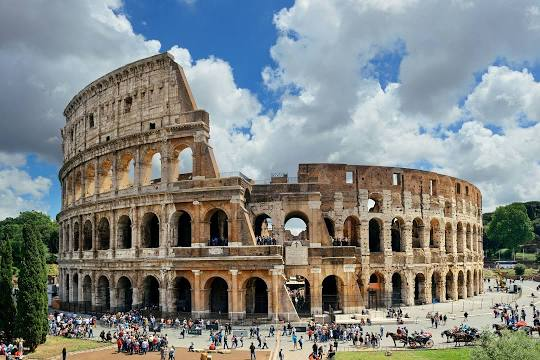

Колизей или амфитеатр Флавиев

Амфитеатр, памятник архитектуры
Древнего Рима, наиболее известное и одно из самых грандиозных
сооружений Древнего мира, сохранившихся до нашего времени. Находится в
Риме, в низине между Эсквилинским, Палатинским и Целиевым холмами.
Пли́твицкие озёра

Национальный парк в
Хорватии, расположенный в центральной части страны, в Лицко-Сеньской и
Карловацкой жупаниях. Воды реки Корана, текущие сквозь известняк, за
тысячи лет нанесли барьеры травертина, образовав естественные плотины,
которые, в свою очередь, создали ряд живописных озёр, водопадов и
пещер.
Утёсы Мо́хер

Клиф в Ирландии, на берегу
Атлантического океана, в графстве Клэр. Высота утёсов — около 120 -
214 метров. Вид с утёсов привлекает ежегодно около миллиона туристов —
в 2006 году утёсы были признаны самой популярной у туристов
достопримечательностью в Ирландии.
Йёкюльсаурлоун

Cамая большая ледниковая лагуна в
Исландии. Он развился в лагуну после того, как ледник начал отступать
от берега Атлантического океана. Площадь около 18 км². Глубина до 200
метров. На Йёкюльсаурлоуне снимались некоторые сцены фильмов «Умри, но
не сейчас» (2002) и «Бэтмен: Начало» (2005)
Анси́
Озеро во Франции, в департаменте Верхняя
Савойя. Второе по величине озеро в стране, после Лак-дю-Бурже.
Размеры: 14,6 км на 3,2 км. Максимальная глубина — 82 м. Озеро
образовалось около 18 000 лет назад в период таяния больших альпийских
ледников. Место привлекательно для туристов, известно среди любителей
водных видов спорта и развлечений на воде.
Музей Лувра
Один из крупнейших и старейших
музеев с богатой историей коллекционирования художественных и
исторических реликвий Франции. В Лувре собиралось всё, этот музей
можно назвать универсальным. Его коллекции покрывают огромные
географические и временные пространства. В 2018 году число посетителей
Лувра превысило 10 млн человек, что является рекордом.
Афи́нский Акро́поль

Акрополь в городе Афины,
представляющий собой 156-метровый скалистый холм с пологой вершиной
(ок. 300 м в длину и 170 м в ширину). Это было главное место для
нахождения царя. По настоящее время Акрополь — выдающийся памятник
архитектурного искусства.
Э́йфелева ба́шня
Металлическая башня в центре
Парижа, названа в честь главного конструктора Гюстава Эйфеля. Башня
была построена в 1889 году и первоначально задумывалась как временное
сооружение, служившее входной аркой парижской Всемирной выставки 1889
года, но впоследствии стала символом Парижа. Эйфелеву башню называют
самой посещаемой платной и самой фотографируемой
достопримечательностью мира.